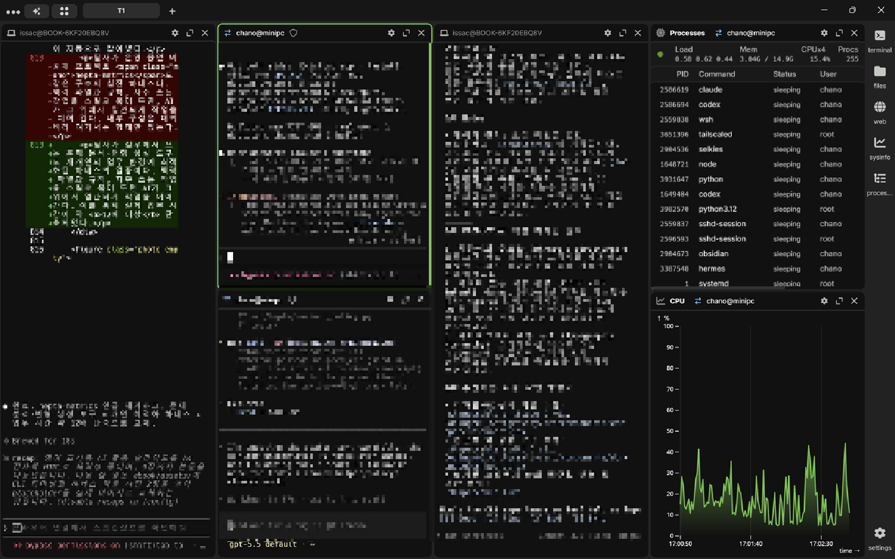
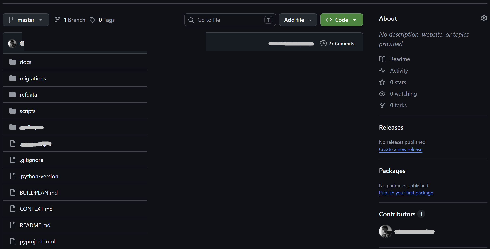

영어 교사를 위한 AI 활용
AI는 +가 아니라
×다
단순 검색·질문 도구를 넘어,
수업의 전 과정을 바꾸는 도구로.
"입력을 키우면, AI는 그것을 곱한다."
더하기가 아니라 곱하기
AI는 당신의 일에 기능 하나를 더하는 도구가 아니라, 이미 가진 역량을 몇 배로 키우는 곱셈의 도구다.
많은 사람이 AI를 '기능 추가'로 받아들인다. 원래 하던 일에 편리한 도구 하나를 보태는 정도로 말이다. 그러나 AI의 진짜 성격은 덧셈보다 곱셈에 가깝다. 당신이 가진 기준과 자료, 노하우라는 값에 AI가 곱해지면서 결과의 규모 자체가 달라진다.
곱셈에는 분명한 함의가 하나 있다. 어떤 수에 0을 곱하면 결과는 언제나 0이라는 점이다. 아무리 뛰어난 AI라도 당신이 넣는 입력이 비어 있으면, 돌아오는 결과도 비어 있다.
입력의 크기가 결과의 크기를 결정하는 곱셈의 구조.
그래서 정말 중요한 질문은 "어떤 AI를 쓰느냐"가 아니다. 어떻게 곱셈을 적용할 것인가이다. 한 번의 질문에서 시작해, 작업 환경을 통째로 설계하는 단계와 스스로 개선되는 구조에 이르기까지. 이 책은 그 곱셈을 키우는 길을 차례로 따라간다.
네 단계의 지도
AI 활용은 네 단계로 깊어진다. 한 번의 질문에서 시작해, 결국 스스로 개선되는 구조에 이른다.
AI를 쓰는 방식은 한 자리에 머물지 않는다. 처음에는 한 번의 질문(Prompt)으로 시작하지만, 무엇을 알려 주느냐(Context)에 따라 결과가 갈리고, 그 맥락을 환경에 심어 두면(Harness) 매번의 준비가 사라지며, 피드백을 다시 넣는 구조(Loop)를 갖추면 쓸수록 좋아진다.
한 번의 질문에서 자가개선 구조까지, AI 활용의 네 단계.
이 책은 Prompt와 Context를 깊게 다루고, Harness와 Loop는 개념을 잡을 만큼만 가볍게 '찍먹'한다. 앞의 두 단계만 제대로 익혀도 매주의 작업이 달라지기 때문이다.
Prompt, 그 의의와 한계
"너는 15년차 영어 교사야"라고 역할을 부여하면 답이 똑똑해진다는 통념. 정확도 면에서는 사실이 아니다.
역할을 부여하면 AI가 더 전문가다운 답을 줄 것 같다. 널리 퍼진 믿음이지만, 정확도 면에서는 사실상 의미가 없다. 페르소나는 말투와 어휘, 톤을 바꿀 뿐 지식과 추론력을 끌어올리지 않는다. 오히려 페르소나를 유지하는 데 주의가 분산되어 추론이 저하되기도 한다.1
역할·페르소나를 주면 답이 똑똑해진다
- 말투·어휘·톤만 흉내 낼 뿐, 지식·추론력은 늘지 않는다
- 결과는 전문가 말투로 포장된 오답, 곧 '잘 차려입은 오류'
- 페르소나 유지에 주의가 분산돼 추론은 오히려 저하
바꾸는 건 '누구인 척'이 아니라 '무엇을 아느냐'
- 전문가 페르소나로는 정확도가 유의미하게 오르지 않는다
- 모델 안에는 이미 잘 설계된 시스템 프롬프트가 있다
- 페르소나가 바꾸는 건 스타일이지 정확도가 아니다
프롬프트만 쓸 때 부딪히는 세 가지 벽
페르소나가 핵심이 아니라면, 프롬프트의 진짜 한계는 어디에 있을까. 한 번의 질문만으로 일하려 하면 매번 같은 벽에 부딪힌다.
- 매번 처음부터학년·시험 유형·난이도를, 질문할 때마다 다시 설명해야 한다.
- 결과가 들쭉날쭉같은 질문에도 매번 다른 결과. AI가 빈자리를 추측으로 메우기 때문이다.
- 내 기준을 모른다우리 반 수준, 내 출제 스타일과 금지 규칙을 AI는 알 길이 없다.
세 가지 벽의 원인은 결국 하나다. 맥락(Context)이 빠져 있다는 것. 그래서 다음 장의 주제는 자연스럽게 Context가 된다.
Context, 결과를 가르는 맥락
결과를 바꾸는 건 모델이 아니라 맥락이다. Context는 AI에게 '답지'를 쥐어 주는 일이다.
같은 모델에 같은 지문, 같은 질문을 넣어도 결과는 완전히 달라질 수 있다. 변수는 단 하나, 맥락의 유무다. 같은 ChatGPT 혹은 Claude에 같은 수능 빈칸 소재를 주더라도, 맥락이 있느냐 없느냐에 따라 전혀 다른 문제가 나온다. 핵심은 간단하다. Context는 AI에게 답지를 쥐어 준다.
같은 AI, 같은 질문, 맥락 하나로 갈린다.
"수능 빈칸 문제 만들어줘"의 전과 후
맥락의 유무가 결과를 어떻게 가르는지는 실제 작업으로 보면 분명해진다.
"지문으로 빈칸 문제 만들어줘"
- 본문 구절을 그대로 빈칸 처리한 단순 암기식
- 오답이 엉뚱하다: "하늘 색깔", "쉽게 돈 버는 법"
- 매력도 0이라 실제 시험 대비엔 쓸모가 없다
난이도·오답 규칙·출력 형식을 명시
- 빈칸은 주제 논리에 걸리도록, 추론을 요구한다
- 오답에 반대 논리(본문 키워드)와 지나친 일반화를 섞는다
- 정답은 핵심 메시지를 학술적으로 재진술한 문장
좋은 맥락의 구조: 페르소나보다 제약·예시·형식
맥락을 잘 준다는 건 길게 쓰는 일이 아니다. '교사인 척'을 시키는 대신, 규칙과 기준과 형식을 정확히 주는 일이다.
- 제약 > 페르소나'교사인 척'이 아니라 규칙과 기준을 준다.
- 형용사보다 예시좋은 문제 한 개를 붙여 기준으로 삼게 한다.
- 출력 형식 고정HTML·PDF로 바로 붙여넣을 수 있게 형식을 지정한다.
- 금지 규칙하지 말 것을 명시한다. AI는 그냥 두면 무조건 과하게 더한다.
맥락은 맨 앞이나 맨 뒤에 두라. 긴 맥락의 중간은 모델이 잘 읽지 않는다(Lost in the Middle, Stanford). 학년·시험 유형·난이도·금지 같은 핵심 규칙은 문서의 처음이나 끝에 배치하는 편이 안전하다.
한 번 쓰고 계속 재사용하는 맥락 블록
좋은 맥락은 매번 새로 쓰는 글이 아니라, 한 번 정리해 두고 계속 재사용하는 자산이다. 아래는 영어 교사용 맥락 블록의 한 예다.
# [SYSTEM CONTEXT: 영어 교사 어시스턴트] 대상 일반고 고2, 모고 평균 3등급 학생 시험 유형 수능/모고 빈칸추론(31–34) 어휘·문법 교육과정 2500단어 내외 / 관계사·양보 부사절 위주 출제 규칙 변형 시 동의어로 20%+ 재진술, 빈칸은 주제 논리에 적합하게 선지 생성 '반대 논리(키워드 포함)'·'지나친 일반화' 각 1개 필수 출력 형식 [지문] → [어휘] → [문제] → [정답 + 오답별 매력도 해설] 금지 지문 독해 없이 배경지식만으로 풀리는 문제 금지
Harness, 환경을 설계하라
Prompt가 한 번의 질문이라면, Harness는 그 질문을 던지는 작업 환경 자체를 미리 설계하는 일이다.
맥락 블록을 매번 붙여넣는 것조차 번거롭다. Harness는 그 맥락을 환경에 영구히 심어, 매번의 준비를 0으로 만든다. GPTs, ChatGPT, Claude의 Project도 대화 환경을 미리 만들어 두는 가벼운 하네스이다.
GPTs · Project / Claude Project
- 지식 파일에 작년 모고 PDF, 수능특강 지문, 내 해설 3개를 올린다
- 지시문에 앞 장의 맥락 블록 등 AI가 읽을 문서를 저장한다
- 이후 "이 지문으로 빈칸 문제 2개 생성해"만 입력하면 끝이다
Prompt는 한 번의 질문,
Harness는 작업 환경의 설계
- 설정 한 번으로 모든 세션에서 곧바로 작업한다
- Prompt의 '매번 처음부터'라는 귀찮음이 0이 된다
Loop, 점점 더 잘하게
Loop는 한 번의 좋은 결과가 아니라, 매번 더 나아지는 구조를 만드는 일이다.
AI가 만든 결과를 교사가 검수하고 고친다. 여기서 멈추면 그 수정은 한 번 쓰고 사라진다. Loop는 그 피드백을 버리지 않고 맥락에 적어 넣어, 다음 생성에 자동으로 반영되게 만드는 순환이다.
Human in vs on the Loop
영어 교사의 실전
Prompt·Context·Harness·Loop를 수업 워크플로에 그대로 얹는다. AI의 곱셈이 가장 크게 작동하는 곳부터.
네 단계의 개념을 익혔다면, 이제 실제 업무에 적용할 차례다. 영어 교사의 일 가운데 AI의 곱셈이 가장 크게 작동하는 곳은 문제 출제와 변형이다. 나머지 업무도 같은 원리로 확장된다.
문제 출제와
변형 문제
원본 출제부터 기존 문항 변형까지. 5대 변형 유형(순서·삽입·어법·어휘·무관문장)별 제약을 맥락에 넣으면 출제 품질이 안정된다.
지문 분석·요약
독해 지문의 구조·주제·논리 분해
학생 개별 피드백
학생 맥락을 반영한 맞춤 코멘트
수능 유형별 해설
유형 해설과 모범답안 제작
핸드아웃·보충자료
보충자료 초안의 빠른 생성
한 줄 질문에 맥락 한 겹을 더하라
거창한 변화가 아니어도 된다. 지금 쓰는 프롬프트에 맥락 한 겹만 얹어도 출력이 안정된다.
"이 지문 빈칸 문제 만들어줘"
- AI가 여덟 가지(학년·난이도·오답규칙·형식…)를 전부 추측한다
- 그래서 매번 다른 결과가 나온다
"고2 3등급·빈칸추론, 반대논리 오답 1개 포함, [지문]→[문제]→[해설] 형식"
- 추측이 사라지고 규격에 맞는 안정적 출력이 된다
- 오늘 당장, 내가 쓰던 프롬프트에 바로 적용할 수 있다
내용이 좋아도 디자인이 0이면 × = 0
곱셈의 논리는 결과물의 형태에도 그대로 적용된다. 내용이 아무리 좋아도 전달하는 디자인이 0이면 전체 곱은 0이 된다. AI가 만든 'AI 슬롭'을 손보지 않은 채 학생과 학부모에게 내보내지 말아야 한다.
- 줄표(—) 남발, 항상 세 개짜리 불릿, 이모지 누수
- "게다가·또한·결론적으로" 같은 기계적 연결어
- 7–8pt로 욱여넣은 본문, 의미 없는 삽화가 지면의 30%
- 실제 사실·예시·내 의견을 넣어 '말하듯' 다시 쓴다
- 제목·본문·예시의 위계와 여백, 채점란을 갖춘 학습지로
- 국·영문 폰트를 통일하고 강조색은 한 가지만 쓴다
내용은 텍스트로, 조판은 도구로
형식에도 맥락을 적용한다. AI는 자신이 잘 다루는 형식, 곧 마크다운과 HTML로 주고받을 때 가장 강하다. 내용은 텍스트로 받고, 조판은 도구에 맡기면 된다.
업계도 DESIGN.md, AGENTS.md 같은 '맥락 파일'을 표준으로 쓴다. AI에게 디자인 규칙을 한 번 정해 주면 매번 일관되게 따른다.
이 전자책 역시 그렇게 만든 결과다.
지금 당장 하는 법
개념은 충분하다. 막연한 다짐 대신, 시간이 날 때 다음 여섯 가지를 순서대로 해 보자. '문제 변형'부터 시작하길 권한다.
- 업무 한 개 고르기'문제 변형'부터 추천한다.
- 맥락 블록 작성학년·시험유형·난이도·금지, 네 줄이면 충분하다.
- Project에 저장GPT·Claude Project에 자료를 최소 세 개 이상 올린다.
- 규칙을 다시 적어 넣기수정한 규칙을 맥락에 반영한다. 이것이 Loop다.
- 형식을 도구에 맡기기출력은 .md로 받아 PDF로 변환한다.
- 디자인 슬롭 점검줄표와 삽화를 정리하고 폰트를 통일한다.
여섯 단계는 한 번의 설정으로 끝난다. 그리고 그 설정이 매주의 시간을 곱절로 돌려준다.
필자는 어떻게 작업하는가
지금까지는 챗 화면이 무대였다. 한 걸음 더 들어가면, 같은 원리를 훨씬 크게 굴리는 자리가 있다. CLI(명령줄) 레벨의 AI다.
필자는 일상 작업의 상당 부분을 Claude Code나 Codex 같은 CLI 에이전트로 처리한다. 챗 UI가 한 번에 한 대화라면, CLI 도구는 프로젝트 폴더 전체를 맥락으로 읽고, 파일을 직접 만들고 고치며, 명령까지 실행한다. 앞에서 따로따로 다룬 Context·Harness·Loop를 한 환경에서 동시에 굴리는 셈이다.
CLI 레벨: Claude Code와 Codex
가장 큰 차이는 무대가 '대화'에서 '작업 환경'으로 바뀐다는 점이다. AI가 저장소(repo)를 통째로 읽으므로 맥락을 매번 붙여넣을 필요가 없고, 결과를 화면에 받아 적는 대신 파일로 바로 남긴다. 챗에서 익힌 맥락의 원리가 여기서는 환경 그 자체가 된다.

Harness를 직접 만든다
이 단계의 Harness는 앞 장의 맥락 블록을 한 단계 끌어올린 것이다. AGENTS.md나 CLAUDE.md 같은 맥락 파일에 규칙·금지·출력 형식을 적어 두고, 자주 쓰는 작업은 스킬(skill)로, 반복 점검은 훅(hook)으로 자동화한다. 한 번 만들어 두면 모든 세션이 같은 규칙을 따른다. 이 전자책을 다듬는 동안에도 디자인 규칙을 어긴 부분을 훅이 자동으로 잡아냈다.
필자가 실무에서 쓰는 문제 분석·변형 생성 도구도 개개인의 업무 환경에 최적화된 하네스의 일종이다. 맥락 파일과 규칙, 자주 쓰는 작업을 스킬로 묶어 두면 AI가 그 위에서 일관되게 작업을 이어 간다. 이를 통해 실제 업무 시간이 약 12배 이상 단축되었다.

Loop로 End-to-End까지
여기에 Loop를 더하면 작업이 End-to-End(E2E)로 이어진다. 원문을 넣으면 초안 작성, 자체 점검(QA), 디자인, 최종 출력까지 AI가 단계별로 구동하고, 사람은 핵심 지점만 승인하거나(in the loop) 예외만 들여다본다(on the loop). 검수 결과는 그대로 흘려보내지 않고 다시 맥락 파일과 스킬에 적어 넣어, 다음 작업이 한층 정확해진다.
E2E: AI가 원문부터 출력까지 전 단계를 구동하고, 사람은 점검과 예외만 맡는다.
앞서 본 이 책의 제작 과정이 곧 그 작은 사례다. 챗에서 시작한 맥락의 원리를 CLI 환경으로 끌어올리면, 한 사람이 한 번의 설정으로 출제부터 조판까지의 흐름 전체를 돌릴 수 있다.
입력을 키우면,
AI는 그것을 곱한다.
- Prompt → Context맥락을 더하라'누구인 척'이 아니라 무엇을 아느냐가 결과를 바꾼다.
- Harness환경을 저장하라한 번 설계해 두면 매번 재사용할 수 있다.
- Loop피드백을 적어 넣어라버리지 않고 모을수록 매번 더 잘하는 구조가 된다.